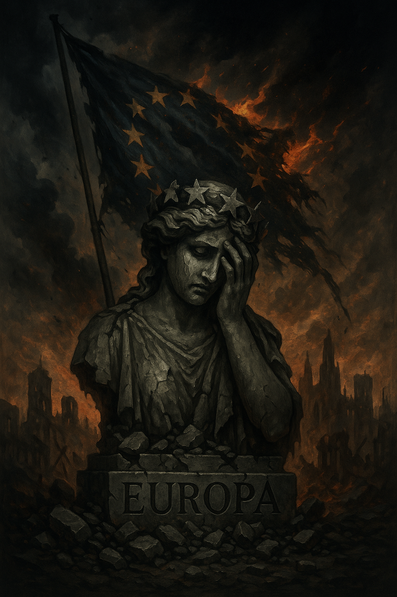

Publicado em 2025-04-27 20:57:23
A Europa, outrora farol de cultura, ciência e liberdade, desmorona-se a olhos vistos, incapaz de resistir à nova vaga de autoritarismo que varre o planeta.
Cercada por ditadores de velha e nova geração — Putin a leste, Trump a oeste (a espreitar o regresso), e Pequim a comandar a máquina global do totalitarismo moderno — o velho continente parece perdido num torpor suicida.
Putin já não disfarça o seu projeto imperialista.
Utiliza a guerra, a mentira e a propaganda como armas, enquanto infiltra divisões, patrocina extremismos e manipula democracias frágeis de dentro para fora.
Trump — o símbolo máximo da degradação democrática — prepara o seu retorno triunfal, não como um democrata disfarçado, mas como um imperador moderno, que despreza instituições, viola direitos e glorifica a ignorância como instrumento de dominação.
A China de Pequim, com a sua máscara de eficiência e crescimento, avança com um totalitarismo tecnológico sem precedentes, onde o controlo da mente e do corpo se torna parte do quotidiano, e onde o conceito de liberdade é uma anomalia censurada.
E onde está a Europa?
Perdida. Amnésica. Ajoelhada.
O continente que gerou Voltaire, Kant e Camus assiste, apático, à erosão dos seus próprios princípios fundamentais.
O projeto europeu, nascido das cinzas da Segunda Guerra Mundial para assegurar paz, prosperidade e liberdade, afunda-se hoje na burocracia, na cobardia e na submissão aos mercados.
Os governantes europeus têm medo.
Medo de romper com o status quo.
Medo de enfrentar o poder crescente dos autocratas.
Medo, acima de tudo, de perder os seus pequenos tronos, as suas confortáveis parcelas de poder.
E enquanto a Europa hesita, os novos imperadores avançam, tomando terreno físico, económico, digital e ideológico.
Esta Europa não cairá apenas vítima da força externa.
Cairá porque esqueceu quem era.
Cairá porque renunciou à sua coragem.
Cairá porque preferiu o conforto da servidão à dureza da liberdade.
Ainda é tempo de resistência?
Talvez.
Mas o relógio corre. E a história é implacável com os que hesitam demasiado tempo diante do abismo.
Francisco Gonçalves
(Fragmentos do Caos)
Co-autor : Augustus